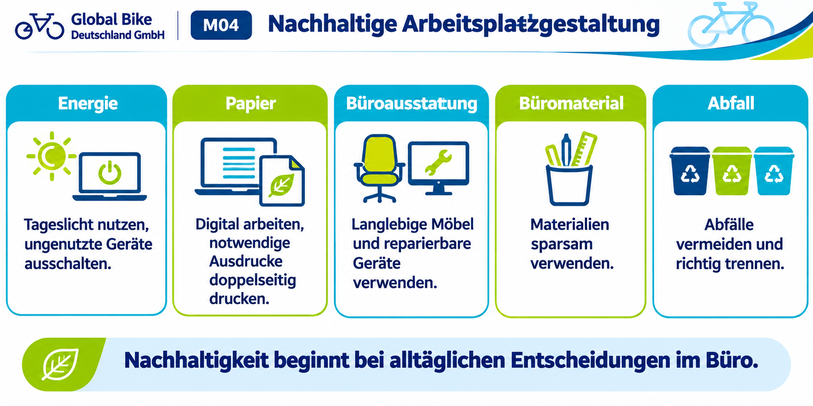

LF 6 · Büroorganisation · 4 UStd. · Löppt · ohne KI
Warum lernen wir das?
Gesunde, sichere und nachhaltige Büros unterstützen Konzentration und Zusammenarbeit.
Am Ende dieser Lernsituation kann ich …
Büroformen unterscheiden und ihre Eignung beurteilen.
Büroarbeitsplätze hinsichtlich Ergonomie, Arbeitsschutz und Nachhaltigkeit überprüfen.
Begründete Verbesserungen entwickeln.
Meinen Lernprozess selbstständig organisieren und eigenverantwortlich entscheiden.
Handlungssituation
Jan Richter und Emma Fuchs möchten die gemeinsame Bürosituation in Vertrieb und Verwaltung am Standort Hamburg verbessern. Telefonate stören die Rechnungsprüfung. Auch Sicherheit, Ergonomie und Ressourcenverbrauch sollen verbessert werden. Sie benötigen einen Arbeitsplatzcheck mit begründeten Empfehlungen.
Fachbegriffs-Check
Wählen Sie jeweils eine Antwort. Sie erhalten sofort Rückmeldung.
Was beschreibt eine Büroform?
Was kennzeichnet ein Einzelbüro?
Was bedeutet Ergonomie?
Was bedeutet Arbeitsschutz?
Was beschreibt Raumakustik?
Was ist ein Ziel nachhaltiger Gestaltung?
Informieren / Analysieren – 50 Min.
Informieren Sie sich anhand der Materialien und untersuchen Sie die Bürosituation. Halten Sie Ihre Erkenntnisse in selbst gewählter Form fest. Nutzen Sie für den Fachbegriffs-Check 5 Minuten, für das Basiswissen und die Grafiken etwa 20 Minuten und für die Bürosituation 25 Minuten. Das Vertiefungswissen ist freiwillig und kann bei Bedarf auch später genutzt werden.
M01 – Büroformen
Basiswissen
Büroformen beschreiben die räumliche Organisation der Arbeit. Im Einzelbüro arbeitet eine Person, im Gruppenbüro ein kleines Team. Ein Großraumbüro vereint viele Arbeitsplätze; ein Kombibüro verbindet kleine Arbeitsräume mit gemeinsamen Flächen. Entscheidend ist, ob eine Tätigkeit Ruhe, Vertraulichkeit oder häufige Abstimmung verlangt.
Büroformen und passende ArbeitsaufgabenOptionales Vertiefungswissen
Bei Global Bike können vertrauliche Personalgespräche einen geschlossenen Raum erfordern. Für gemeinsame Vertriebsabsprachen sind kurze Wege hilfreich. Ein Kombibüro kann beide Bedürfnisse verbinden, benötigt aber passende Räume und eine durchdachte Nutzung. Keine Büroform ist grundsätzlich die beste.
M02 – Ergonomie im Büro
Basiswissen
Ergonomie passt die Arbeit an den Menschen an. Blendung erschwert das Sehen, schlechte Luft kann müde machen und Gespräche können die Konzentration stören. Einstellbare Stühle, blendfreie Beleuchtung, Lüften und regelmäßige Bewegung reduzieren Belastungen.
Konkrete Richtwerte für den Arbeitsplatzcheck
Sitzhöhe: Füße vollständig aufstellen; Knie- und Hüftwinkel etwa 90° oder etwas größer.
Arme: Schultern locker, Ellenbogen etwa 90° oder etwas größer; Unterarme bequem auflegen.
Bildschirm: etwa 50–80 cm Sehabstand (abhängig von Größe und Darstellung); oberste Bildschirmzeile auf Augenhöhe oder darunter, Blick leicht nach unten.
Tastatur: etwa 10–15 cm Platz vor der Tastatur zum Auflegen der Hände.
Bewegung: Sitzposition regelmäßig wechseln und zwischendurch aufstehen.
Die Winkel und Abstände sind ergonomische Orientierungswerte, keine starren gesetzlichen Grenzwerte.
Bildschirme möglichst seitlich zum Fenster aufstellen und Sonnenschutz nutzen. Schallabsorbierende Materialien und getrennte Telefonbereiche können Geräusche reduzieren. Die Sitzhöhe wird so eingestellt, dass die Füße sicher aufstehen und die Schultern entspannt bleiben.
Beleuchtung: Für Schreiben, Lesen und Datenverarbeitung sind nach ASR A3.4 in der Regel mindestens 500 Lux erforderlich. Raumtemperatur: Bei leichter sitzender Tätigkeit beträgt die Mindestlufttemperatur nach ASR A3.5 20 °C; 20–22 °C sind ein möglicher Komfortbereich. Individuelle Bedürfnisse und Arbeitsbedingungen berücksichtigen.
M03 – Arbeitsschutz im Büro
Basiswissen
Arbeitsschutz soll Unfälle und gesundheitliche Gefährdungen verhindern. Lose Kabel können Stürze verursachen, blockierte Fluchtwege behindern die Evakuierung und beschädigte Elektrogeräte können Stromschläge oder Brände auslösen. Der Arbeitgeber organisiert sichere Arbeitsbedingungen; Beschäftigte beachten Regeln und melden Gefahren.
Optionales Vertiefungswissen
Schutzmaßnahmen sollten möglichst an der Ursache ansetzen: Kabel sicher verlegen statt nur davor zu warnen. Defekte elektrische Geräte nicht weiterverwenden und melden. Der Arbeitgeber beurteilt Gefährdungen, unterweist Beschäftigte und überprüft die Wirksamkeit der Maßnahmen.
M04 – Nachhaltige Arbeitsplatzgestaltung
Basiswissen
Nachhaltigkeit bedeutet, Energie und Materialien bewusst zu nutzen. Weniger unnötige Ausdrucke, bedarfsgerechte Beleuchtung und langlebige Ausstattung sparen Ressourcen und können Kosten senken. Abfallvermeidung hat Vorrang vor der Abfalltrennung.

Arbeitsschutz und Nachhaltigkeit im BüroOptionales Vertiefungswissen
Bei der Anschaffung zählen neben dem Kaufpreis auch Stromverbrauch, Reparierbarkeit und Nutzungsdauer. Funktionsfähige Möbel weiterzuverwenden kann sinnvoller sein als ein Neukauf. Geräte nach Feierabend gemäß betrieblichen Vorgaben ausschalten; notwendige IT-Dienste müssen verfügbar bleiben.
M05 – Bürosituation
Sechs Arbeitsplätze und ein wenig genutzter Nebenraum. Didaktisch konstruierter Grundriss.
Telefonate stören die Rechnungsprüfung.
Sonnenlicht spiegelt sich auf Bildschirmen.
Die Raumluft wird als stickig empfunden.
Ein Bürostuhl lässt sich nicht mehr einstellen.
Ein Kabel verläuft über einen Laufweg.
Kartons stehen vor dem Notausgang.
Interne Unterlagen werden häufig einseitig gedruckt.
Computer und Licht bleiben teilweise nach Feierabend an.
Planen – 5 Min.
Planen Sie Ihren Arbeitsprozess, die benötigten Materialien und die Zeit.
Entscheiden – 5 Min.
Wählen Sie genau ein Lernpaket und begründen Sie Ihre Wahl.
Nutzen Sie den Bürogrundriss und die beschriebenen Arbeitsbedingungen bei Global Bike, Ihre Untersuchungsergebnisse aus der Informationsphase sowie die vier Informationsgrafiken als fachliche Grundlage.
Lernpaket A – Arbeitsplatzprüfbericht
Erstellen Sie für Jan Richter und Emma Fuchs einen Prüfbericht über die bestehende Bürosituation. Stellen Sie Ihre Untersuchungsergebnisse systematisch dar, beurteilen Sie die Eignung der vorhandenen Büroform und entwickeln Sie fachlich begründete Verbesserungsvorschläge zu Ergonomie, Arbeitsschutz und Nachhaltigkeit.
Lernpaket B – Bürogestaltungskonzept
Entwickeln Sie auf Grundlage des vorhandenen Bürogrundrisses ein verbessertes Raum- und Arbeitsplatzkonzept für Vertrieb und Verwaltung. Prüfen Sie dabei auch, wie der vorhandene Nebenraum genutzt werden könnte. Stellen Sie Ihre Veränderungen visuell dar und begründen Sie diese hinsichtlich Büroform, Ergonomie, Arbeitsschutz und Nachhaltigkeit.
Lernpaket C – Beratungs-Podcast
Erstellen Sie einen kurzen Audiobeitrag für Jan Richter und Emma Fuchs. Erläutern Sie darin die Ergebnisse Ihres Arbeitsplatzchecks, beurteilen Sie die vorhandene Büroform und beraten Sie beide hinsichtlich sinnvoller Verbesserungen zu Ergonomie, Arbeitsschutz und Nachhaltigkeit. Begründen Sie Ihre Empfehlungen fachlich.
Durchführen – 60 Min.
Nutzen Sie den Bürogrundriss und die beschriebenen Arbeitsbedingungen bei Global Bike, Ihre Untersuchungsergebnisse aus der Informationsphase sowie die vier Informationsgrafiken als fachliche Grundlage.
Lernpaket A – Arbeitsplatzprüfbericht
Erstellen Sie für Jan Richter und Emma Fuchs einen Prüfbericht über die bestehende Bürosituation. Stellen Sie Ihre Untersuchungsergebnisse systematisch dar, beurteilen Sie die Eignung der vorhandenen Büroform und entwickeln Sie fachlich begründete Verbesserungsvorschläge zu Ergonomie, Arbeitsschutz und Nachhaltigkeit.
Nutzen Sie den Bürogrundriss und die beschriebenen Arbeitsbedingungen bei Global Bike, Ihre Untersuchungsergebnisse aus der Informationsphase sowie die vier Informationsgrafiken als fachliche Grundlage.
Lernpaket B – Bürogestaltungskonzept
Entwickeln Sie auf Grundlage des vorhandenen Bürogrundrisses ein verbessertes Raum- und Arbeitsplatzkonzept für Vertrieb und Verwaltung. Prüfen Sie dabei auch, wie der vorhandene Nebenraum genutzt werden könnte. Stellen Sie Ihre Veränderungen visuell dar und begründen Sie diese hinsichtlich Büroform, Ergonomie, Arbeitsschutz und Nachhaltigkeit.
Nutzen Sie den Bürogrundriss und die beschriebenen Arbeitsbedingungen bei Global Bike, Ihre Untersuchungsergebnisse aus der Informationsphase sowie die vier Informationsgrafiken als fachliche Grundlage.
Lernpaket C – Beratungs-Podcast
Erstellen Sie einen kurzen Audiobeitrag für Jan Richter und Emma Fuchs. Erläutern Sie darin die Ergebnisse Ihres Arbeitsplatzchecks, beurteilen Sie die vorhandene Büroform und beraten Sie beide hinsichtlich sinnvoller Verbesserungen zu Ergonomie, Arbeitsschutz und Nachhaltigkeit. Begründen Sie Ihre Empfehlungen fachlich.
Bearbeitungszeit: 60 Minuten. Über die konkrete Gestaltung entscheiden Sie selbst.
Bewerten / Überprüfen – 45 Min.
Qualitätscheckliste
5.1 Laden Sie Ihr Lernpaket in die Ablagebox hoch und buchen Sie, falls von Ihnen gewünscht, einen Termin zur Präsentation Ihres Lernpakets.
Nutzen Sie bei Bedarf die Übungsaufgaben.
5.2 Absolvieren Sie nun den Wissens-Check, indem Sie sich nach Rücksprache mit der Lehrkraft hier dafür anmelden.
Reflektieren – 5 Min.
Reflektieren Sie, indem Sie das Feedback ausfüllen und abgeben.
Öffnen Sie die separate Moodle-Aktivität Feedback.


![Telefonate im Vertrieb stören bei Global Bike die Rechnungsprüfung. Einzelbüro. Ein Arbeitsplatz im eigenen Raum. Gut für vertrauliche Gespräche und Aufgaben, die viel Ruhe brauchen. Gruppenbüro. Ein kleines Team teilt einen Raum. Absprachen gehen schnell, Gespräche können aber ablenken. Großraumbüro. Viele Arbeitsplätze liegen in einer offenen Fläche. Die Nutzung braucht Regeln und guten Schallschutz. Kombibüro. Kleine Arbeitsräume und gemeinsame Flächen. Ruhe und Austausch bekommen jeweils ihren Platz. Ein Nebenraum kann zum Telefonieren dienen. So gewinnt die Rechnungsprüfung Ruhe, ohne dass das Team umziehen muss.](Grafiken/Erklaerbilder/LS_6_9_M01_Bueroformen_und_Arbeitsaufgaben.png)


![Emma Fuchs und Jan Richter prüfen Arbeitsplätze und Laufwege. Kabel im Laufweg. Kabel fest und außerhalb des Laufwegs verlegen. So sinkt die Stolpergefahr. Kartons am Notausgang. Kartons entfernen. Ausgang und Fluchtweg freihalten. Viele Ausdrucke. Nur bei Bedarf drucken, wenn geeignet doppelseitig. Licht und Geräte laufen weiter. Licht bei Bedarf nutzen. Geräte nach Feierabend nach den betrieblichen Vorgaben ausschalten. Eine passende Maßnahme setzt an der Ursache an. Sie lässt sich danach auf ihre Wirkung prüfen.](Grafiken/Erklaerbilder/LS_6_9_M03_M04_Buero_sicher_und_nachhaltig.png)